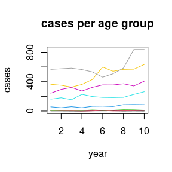
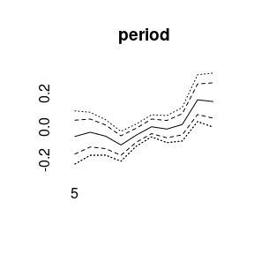
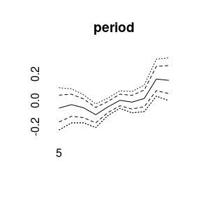
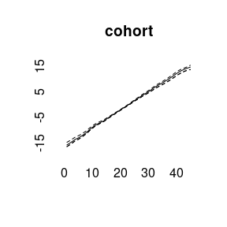
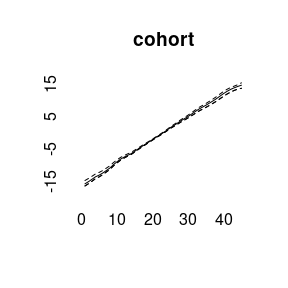

Bayesian Age-Period-Cohort Modeling
Volker Schmid
2019-01-07
modeling.RmdData example
BAMP includes a data example.
data(apc)
plot(cases[,1],type="l",ylim=range(cases), ylab="cases", xlab="year", main="cases per age group")
for (i in 2:8)lines(cases[,i], col=i)
APC model with random walk first order prior
model1 <- bamp(cases, population, age="rw1", period="rw1", cohort="rw1",
periods_per_agegroup = 5)bamp() automatically performs a check for MCMC convergence using Gelman and Rubin’s convergence diagnostic. We can manually check the convergence again:
checkConvergence(model1)## [1] TRUENow we have a look at the model results. This includes estimates of smoothing parameters and deviance and DIC:
print(model1)##
## Model:
## age (rw1) - period (rw1) - cohort (rw1) model
## Deviance: 231.12
## pD: 36.70
## DIC: 267.83
##
##
## Hyper parameters: 5% 50% 95%
## age 0.416 1.051 2.232
## period 66.933 193.537 599.247
## cohort 34.127 59.494 97.886We can plot the main APC effects using point-wise quantiles:
plot(model1)


More quantiles are possible:
 

model2 <- bamp(cases, population, age="rw2", period="rw2", cohort="rw2",
periods_per_agegroup = 5)checkConvergence(model2)## Warning: MCMC chains did not converge!## [1] FALSEprint(model2)##
## Model:
## age (rw2) - period (rw2) - cohort (rw2) model
## Deviance: 246.13
## pD: 33.39
## DIC: 279.52
##
##
## Hyper parameters: 5% 50% 95%
## age 2.048 6.221 16.406
## period 57.309 301.249 2565.445
## cohort 38.237 75.415 144.251plot(model2)
 

model3<-bamp(cases, population, age="rw1", period=" ", cohort="rw2",
periods_per_agegroup = 5)
checkConvergence(model3)## [1] TRUEprint(model3)##
## Model:
## age (rw1) cohort (rw2) model
## Deviance: 276.48
## pD: 30.05
## DIC: 306.53
##
##
## Hyper parameters: 5% 50% 95%
## age 0.314 0.792 1.639
## cohort 38.239 73.922 138.757plot(model3)

(model4<-bamp(cases, population, age="rw1", period="rw1", cohort="rw1",
cohort_covariate = cov_c, periods_per_agegroup = 5))##
## Model:
## age (rw1) - period (rw1) - cohort (rw1) model
## Deviance: 231.30
## pD: 36.89
## DIC: 268.19
##
##
## Hyper parameters: 5% 50% 95%
## age 0.414 1.045 2.249
## period 64.401 197.643 634.969
## cohort 34.465 59.161 97.485plot(model4)


(model5<-bamp(cases, population, age="rw1", period="rw1", cohort="rw1",
period_covariate = cov_p, periods_per_agegroup = 5))##
## Model:
## age (rw1) - period (rw1) - cohort (rw1) model
## Deviance: 231.32
## pD: 36.91
## DIC: 268.23
##
##
## Hyper parameters: 5% 50% 95%
## age 0.414 1.046 2.243
## period 66.897 197.825 627.436
## cohort 34.569 59.630 97.663plot(model5)